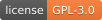

DTOcean
Optimal Design Tools for Ocean Energy Arrays
Release v2.0.0 (Installation)

DTOcean is the only open source fully parametric design tool for arrays of ocean energy converters.
DTOcean automates the design of an array of ocean energy converters (OECs). Automated design helps catch errors early, reduce financial risk and encourage innovation in array design and the supply chain.
Key Features
DTOcean is accelerating tomorrow’s energy generation technology with advanced array design:
Optimal ocean energy converter (OEC) positioning
Cost-effective energy export
Station keeping designed for device and site conditions
Installation planning with weather effects
Maintenance needs and OEC downtime
A unique statistical approach to LCOE
Influence reliability at component level
Environmental impact assessment*
Graphical user interface
Persistent database
Wizard based installation
* experimental feature
Contents
User Guide
Loved and maintained by Mathew Topper @ Data Only Greater